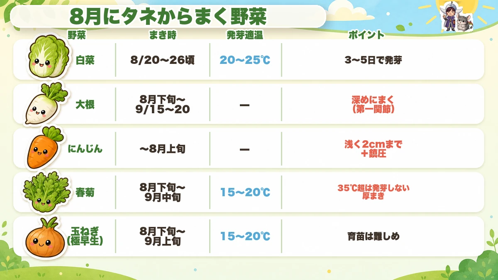
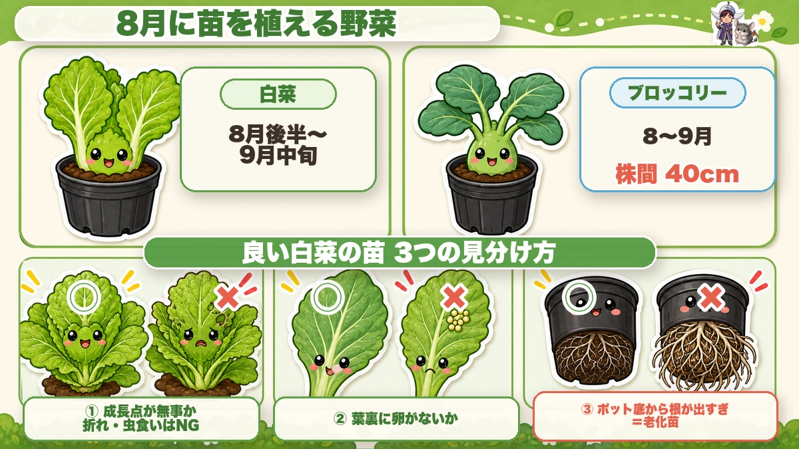
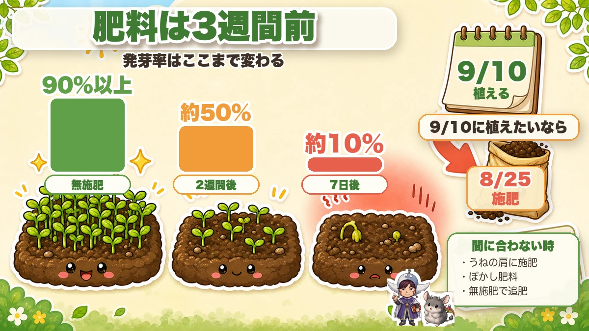

【8月にまく・植える野菜】種まき＆植え付けカレンダー🌱 猛暑の今こそ、秋冬の勝負が始まる
🗨️「8月って、暑すぎて何もできない気がする…」
🗨️「秋冬野菜、いつ始めればいいの？」
🗨️「去年まいたけど、全然発芽しなかった…」
どうも、8150（えいこう）です🌱 家庭菜園歴8年、理科の教員免許を持ってて、有機・無農薬で野菜を育ててます。
新シリーズ、始めます。毎月「今月なにをまく・植えるか」をまとめてお届けする定期便です。第1回は8月。
先に、いちばん大事なことを言いますね。8月は「休む月」じゃなくて、秋冬野菜の勝負が決まる月です。ここでの1〜2週間のズレが、12月のごはんを左右します。ほんまに。
でも身構えなくて大丈夫。この記事だけ見て、「まく日」と「植える日」をカレンダーに書き込むだけでOKです☺️
※以下の時期は中間地（関東〜関西の平野部）が目安。寒い地域は少し遅らせ、暖かい地域は早めに（種の袋にまく時期が書いてあるので、チェック✨️）。
📖 この記事の目次
今月の畑は、こんな状態
猛暑まっさかり。人間もしんどいですが、野菜も虫も“暦どおり”に動かなくなってきてます。
私の実感だと、ここ数年は9月半ばになっても虫が減りません。昔は「8月末にまけば大丈夫」で通用したのが、今はまいても発芽しない・苗が溶けるということが普通に起きます。
だからこの記事では、「◯月◯日ごろ」まで踏み込んで書きます。ざっくり「8月下旬」だと、もう間に合わないことがあるからです。
8月にタネからまく野菜

白菜（8月20日〜26日ごろ）
秋冬野菜の主役。私は毎年8月20〜26日を目安にまいてます。発芽適温は20〜25℃、3〜5日で芽が出て、15〜20日で植えどき。
まき方でひとつ大事なこと。この時期は畑に直まきせず、セルトレイにまいて育苗するのがおすすめです。理由は3つあって、暑さから守れる（すずしい半日陰に置ける）、水やりを管理しやすい、そして小さい芽のうちに虫にやられにくい。真夏の直まきは、発芽しても双葉が焼けたり虫に食べられたりで、けっこう消えます。
- トレイの選び方…すぐ畑に植えられる人は80穴・128穴の小さめセルトレイ。週末しか畑に行けない人は16穴の大きめトレイかポリポットが安心（本葉3〜4枚まで待てます）
- まき方…1穴に2〜3粒、覆土は5mmほど。上から強く押さえつけないこと
- 置き場所…軒下など雨の当たらない半日陰へ。トレイはカゴやコンテナの上に浮かせて置くと風が通って地温が上がりにくく、発芽率が上がります
品種は「黄ごころ65」みたいな早生（種まきから65〜75日）が家庭菜園向き。無農薬ならミニ白菜が断然ラクです。育てる期間が短い＝虫に狙われる期間も短いので。
大根（8月下旬〜9月中旬）
9月15〜20日までにまき終えるのが目安。品種に迷ったら「耐病総太り」でまず失敗しません。
まき方は条間60cm・株間30cm・1か所に3粒。ポイントは深さで、大根は光を嫌うタネ（嫌光性種子）なので、人差し指の第一関節くらいの深さにまきます。浅いと発芽が揃いません。3〜4日で芽が出ます。
ちなみに、狭い畑やプランターなら株間20cmでも大丈夫。大きさは控えめになりますが、そのぶん扱いやすくて冷蔵庫にも入るサイズになります。「でかいのを作らなきゃ」と思わなくていいんです。
にんじん（8月上旬まで）
にんじんは夏まきが本命。春まきより太くてがっしりしたのが穫れます。冬は畑に置いたまま、2〜3月まで貯蔵できるのも助かります。
ただし発芽が9割。「発芽できたら7〜8割成功」と言われるくらい、ここが山場です。タネは光が要るので浅く（2cmまで）、そして鎮圧をしっかり。発芽まで2週間かかるので、乾かさないことが命です。
- まく間隔…裸のタネなら2〜3cm間隔でまいて、間引きを2回。最終的に株間8〜12cmに
- タネの選び方…コーティングされたペレット種子は6cm間隔でまけて間引きも不要でラクなのですが、夏の乾いた時期はコーティングが溶けきらず発芽しないことがあります。この時期は裸のタネを1粒ずつまくほうが確実です
春菊（8月下旬〜9月中旬）
発芽適温は15〜20℃。35℃を超えると発芽率がガタ落ちするので、暑い年は9月に入ってからでOK。
春菊はもともと発芽率が5割くらい（ほかの野菜は7〜8割）なので、ケチらず厚めにまくのがコツ。100円ショップでも売っているので、遠慮なくどうぞ。
まき方は、条間20cmのまき溝に1cm間隔で。春菊は光が当たらないと芽が出ないタネ（好光性種子）なので、覆土はごく薄く。そのぶん乾きやすいので、まいたあとはしっかり鎮圧して土と密着させてください。
玉ねぎ（極早生なら8月下旬〜）
苗から作りたい人は、極早生を8月下旬〜9月上旬にまきます。玉ねぎも直まきではなく、育苗箱（または畑の一角に作った苗床）にまいて、苗を育ててから11月に植え付ける流れです。
- 育苗箱にまくなら…条間6〜8cm、深さ1cmのまき溝に、種を5mm〜1cm間隔で。覆土は種が隠れる程度に薄く（厚いと発芽率が落ちます）
- 畑の一角でもOK…1mほどの幅があれば100本近い苗が作れます
ただし正直に言うと、玉ねぎの育苗はけっこう難しいです。目標は鉛筆くらいの太さで、細いと冬に枯れ、太すぎると春にとう立ちする。この見極めが難しいので、初心者は11月に苗を買うほうが確実です。私も最初の数年は買っていました。
ホーム玉ねぎ（8月下旬〜9月1日）※タネではなく“種球”
これ、8月にしかできない上に、めちゃくちゃラクなのでおすすめです。
タネから育てる玉ねぎと違って、小さな球根（種球）をポンと植えるだけ。8月下旬〜9月1日ごろに植えると、11月には玉ねぎの大きさになります。途中で青い葉も食べられるので、葉玉ねぎとしても楽しめますよ。
ひとつだけ、これだけは守ってください。植え時を逃さないこと。遅れると冬までに玉が太らず、春になってとう立ちして分球してしまいます。ホーム玉ねぎは「植え時さえ間違えなければ勝ち」くらいの野菜です。
8月にまける“変化球”
- 年内どりのキャベツ…極早生の春系を8月中にまくと、11月〜12月に穫れます
- つるなしいんげん…8月まき→11月収穫
- とうもろこし…8月中旬までの種まきで10月収穫（白黒マルチで地温を抑えて）
- 赤キャベツ…早生種なら11月に収穫。酸性寄りの土だと、より赤く仕上がります
![[商品価格に関しましては、リンクが作成された時点と現時点で情報が変更されている場合がございます。]](https://hbb.afl.rakuten.co.jp/hgb/55e75fe5.20db4cd1.55e75fe7.d1ec32cc/?me_id=1194164&item_id=10000832&pc=https%3A%2F%2Fthumbnail.image.rakuten.co.jp%2F%400_mall%2Fgardening%2Fcabinet%2Fikubyoukesoku%2Fimg10431256665.jpg%3F_ex%3D240x240&s=240x240&t=picttext "[商品価格に関しましては、リンクが作成された時点と現時点で情報が変更されている場合がございます。]")

![[商品価格に関しましては、リンクが作成された時点と現時点で情報が変更されている場合がございます。]](https://hbb.afl.rakuten.co.jp/hgb/565b7811.82562bc6.565b7812.698bf113/?me_id=1411559&item_id=10000556&pc=https%3A%2F%2Fthumbnail.image.rakuten.co.jp%2F%400_mall%2Fatelier-plum%2Fcabinet%2Fpth023_1.jpg%3F_ex%3D240x240&s=240x240&t=picttext "[商品価格に関しましては、リンクが作成された時点と現時点で情報が変更されている場合がございます。]")
![[商品価格に関しましては、リンクが作成された時点と現時点で情報が変更されている場合がございます。]](https://hbb.afl.rakuten.co.jp/hgb/552615f0.9cc2855e.552615f1.776f7de9/?me_id=1251188&item_id=10000437&pc=https%3A%2F%2Fthumbnail.image.rakuten.co.jp%2F%400_mall%2Fyonezawa%2Fcabinet%2Ftane01%2F10daikon%2Ftaibyosofutori.jpg%3F_ex%3D240x240&s=240x240&t=picttext "[商品価格に関しましては、リンクが作成された時点と現時点で情報が変更されている場合がございます。]")
![[商品価格に関しましては、リンクが作成された時点と現時点で情報が変更されている場合がございます。]](https://hbb.afl.rakuten.co.jp/hgb/565b7399.7eb625e3.565b739a.e5ae706a/?me_id=1195638&item_id=10001681&pc=https%3A%2F%2Fthumbnail.image.rakuten.co.jp%2F%400_gold%2Fdomon%2Fgoldgraphic%2Fho-mutamanegi01.jpg%3F_ex%3D240x240&s=240x240&t=picttext "[商品価格に関しましては、リンクが作成された時点と現時点で情報が変更されている場合がございます。]")
セルトレイにまくときの土は、有機タイプの培養土がそのまま使えます。白菜のあとにはネットが必須なので、支柱とパッカーも一緒に。


※セルトレイ（80穴・128穴・16穴）とタネ、ホーム玉ねぎの種球は、お近くの園芸店でも手に入ります。種球は8月中に売り切れることがあるので早めに。
8月に苗を買って植える野菜

白菜（8月後半〜9月中旬）
9月中旬を逃すと、結球しないまま冬になります。 大玉ほどシビアです。
苗を買うときは、この3つだけ見てください。
- 成長点（中心の芽）が無事か…ここが折れてる・虫食い・枯れてる苗は致命傷。周りの葉が少し傷んでるくらいは復活します
- 葉の裏に卵がついてないか…売り場で夜のうちに産卵されてることがあります。卵つきの苗にネットをかけると、天敵のいない“虫の楽園”を作ることになります
- ポットの底から根が出まくってないか…出すぎ＝長く売れ残った老化苗。白菜は茎がないので徒長で見分けられません。底を見るのが確実です
植えるときのコツ：深植えしない（成長点を埋めない）／植え穴に水を満杯に入れて、引いてから植える（先に水、が鉄則。あとからかけると苗が浮きます）／植えたらすぐネットをかける。白菜は数時間の直射日光でも弱ります。
ブロッコリー（8〜9月植え→10月中旬〜2月収穫）
苗は軸が太いものを。細いのは倒れます。株間40cm。
ただし正直に言うと、無農薬なら10月植えがいちばんラクです。8〜9月に植えると虫の勢いがまだ強くて、けっこう削られます。
8月にやっておく準備

★肥料は「3週間前」に入れる
これ、知らないと確実に損します。
有機肥料を入れた直後にタネをまくと、発芽率が激減します。 微生物が分解するときに熱とガスが出て、弱いタネや根をやられるからです。
数字で見ると、けっこう衝撃的です。
- 肥料を入れない（無施肥）… 発芽率 90%以上
- 肥料を入れて7日後にまく … 発芽率 約10%
- 肥料を入れて2週間後にまく … 発芽率 約50%
だから逆算して、9月10日に植えたいなら8月25日ごろに肥料を入れる。これだけで発芽がまるで変わります。
もう間に合わない！という人は、こう。
- あえて肥料を入れずにまく（夏野菜の跡地なら残った肥料でいけます。あとから追肥）
- ぼかし肥料や完熟の残渣堆肥を使う（分解済みなのですぐ植えられます）
- うねの“肩”（外側）に1周分だけ肥料を入れてマルチ（根がそこまで伸びる頃には3週間経ってます）
肥料は「植える3週間前」に入れるのが鉄則。この2つを入れて、寝かせてから植えます。


撤去は「ここから・続いて・まだまだ」で分ける
猛暑の中で全部いっぺんにやろうとすると、体力が持たずに畑から足が遠のきます。私も一度やらかしました😇 なので3つに分けます。
- ここから…9月初旬に植えるうね（白菜・大根・キャベツ）。きゅうり・トマト・枝豆の跡地から片づける
- 続いて…ブロッコリー・小松菜・ほうれん草のうね。ズッキーニ・オクラの跡地
- まだまだ…ナス・ピーマン・豆はまだ穫れるので9月まで置く。ここは10〜11月のニンニク・玉ねぎ用に
トマトは8月中旬でだいたい終わり。 先端に花が咲かなくなって成長が止まったら、切り替えのサインです。ちなみにトマトの跡地は白菜と相性◎。トマトはあまり追肥しないので、肥料が残りすぎてなくてちょうどいいんです。
お盆までにやっておくと後がラク
- 太陽熱消毒…お盆を過ぎると気温が下がって効きが悪くなります
- 雑草の処理…お盆を過ぎると種が落ちます。落ちると来年も再来年も苦労します
- 防虫ネットの調達…植えた直後にかけたいので。「あとで買えばいいや」の間に卵を産まれます
猛暑でまく、5つのコツ🌞
8月まきの敵は虫より暑さです。ここを外すと、そもそも芽が出ません。
- 寒冷紗は「遮光率50%」を選ぶ…60%の目が粗いやつはやめたほうがいいです。私は昔これで失敗しました。雨のとき、粗い網目から水滴がポタポタ落ちて、タネの上に穴が開いたんです😇 50%で発芽に必要な光は十分入ります
- 育苗は“半日陰”で、浮かせる…軒下など雨の当たらない半日陰へ。さらにセルトレイを直置きせず、カゴやコンテナの上に浮かせると風が通って地温が上がりにくく、発芽率が上がります
- 水は「乾いたらたっぷり」…毎日ちょこちょこやると土の中が酸欠になって、かえって発芽しません。時間は朝か夕方。昼にやると幼い苗はダメージを受けます
- 鎮圧は思ってる2〜3倍…発芽しない人の多くは、ここが足りてません。土とタネを密着させると、下から水が上がってきて安定します
- もみ殻・わら・不織布で乾燥を防ぐ…まいた上にかけるだけで、発芽率がぐっと上がります
![[商品価格に関しましては、リンクが作成された時点と現時点で情報が変更されている場合がございます。]](https://hbb.afl.rakuten.co.jp/hgb/565b708e.e3f248ff.565b708f.4c3ea46d/?me_id=1194418&item_id=10631677&pc=https%3A%2F%2Fthumbnail.image.rakuten.co.jp%2F%400_mall%2Fminatodenk%2Fcabinet%2Ffs%2F0109%2Ffs-0117352.jpg%3F_ex%3D240x240&s=240x240&t=picttext "[商品価格に関しましては、リンクが作成された時点と現時点で情報が変更されている場合がございます。]")
猛暑のタネまきは、遮光と乾燥対策で結果が変わります。とうもろこしや秋ジャガのマルチもここで。


※遮光ネットは記事のとおり遮光率50%を。60%の目が粗いものは、雨のときに水滴が落ちてタネの上に穴が開きます。
★そして最大のコツ：「まき直せる余白」を作る
これがいちばん言いたいことです。
近年は、適期どおりにまいても暑さで失敗します。だからいつもより1〜2週間早めにまいて、ダメだったらもう一度まける余白を作っておく。
「早めにまいて、失敗して、2回目で成功した」——これ、ほんとによくある話です。失敗を織り込んだスケジュールにしておくと、気持ちもラクですよ☺️
秋ジャガイモは「春の常識」を全部忘れる
8月下旬から植えられる秋ジャガ。これ、春ジャガと同じやり方をすると失敗します。
- 切らずに植える…暑い時期なので、切り口から腐ります。Sサイズ（50gくらい）をまるごとが基本。どうしても切るなら2等分まで、日陰で2日乾かしてから
- 芽出し（日光に当てる）はしない…春の「浴光催芽」は秋にはNG。高温でたねいもが傷みます。やるなら日陰のすずしいところで
- 逆さ植えもしない…切り口が上を向くと、余計に腐ります
- 品種は「休眠期間」で選ぶ…男爵・メークインなど北海道系は休眠が4か月くらいあって、秋に植えても芽が出ません。デジマ・ニシユタカ・アンデスレッドなど九州生まれの品種を。初めてならアンデスレッドが作りやすいです
- 石灰は入れない…土がアルカリに寄ると「そうか病」が出やすくなります。かわりに米ぬかを2〜3週間前に入れると、拮抗菌が働いてそうか病が減ります
- うねは最低15cm、中央が高いかまぼこ型に…平らだとマルチの穴から水が入ってたねいもが腐ります。「植えたのに芽が出ない」の正体は、たいてい腐ってたです
- 植え方は株間30cm・覆土5cm…水はあまりやりません（やると腐ります）。芽が4〜5本出てきたら、2〜3本に減らす
ひとつ正直に言うと、秋ジャガは春より難しいです。たねいもが高くて品種も少なく、病害虫も出やすい。「絶対やらなきゃ」と気負う必要はありません。たねいもは8月に入ったら早めに確保を（お店にあまり並ばないので、油断すると売り切れます）。
![[商品価格に関しましては、リンクが作成された時点と現時点で情報が変更されている場合がございます。]](https://hbb.afl.rakuten.co.jp/hgb/565b74ce.f30a48e7.565b74cf.8a827250/?me_id=1368676&item_id=10000255&pc=https%3A%2F%2Fthumbnail.image.rakuten.co.jp%2F%400_mall%2Farakawaseed%2Fcabinet%2Fcompass1564563596.jpg%3F_ex%3D240x240&s=240x240&t=picttext "[商品価格に関しましては、リンクが作成された時点と現時点で情報が変更されている場合がございます。]")
![[商品価格に関しましては、リンクが作成された時点と現時点で情報が変更されている場合がございます。]](https://hbb.afl.rakuten.co.jp/hgb/565b770c.0e767ab7.565b770f.2286fabc/?me_id=1245791&item_id=10001139&pc=https%3A%2F%2Fthumbnail.image.rakuten.co.jp%2F%400_mall%2Figamai-tominaga%2Fcabinet%2Fkome%2Fimgrc0133415879.jpg%3F_ex%3D240x240&s=240x240&t=picttext "[商品価格に関しましては、リンクが作成された時点と現時点で情報が変更されている場合がございます。]")
たねいもは8月に入ると売り切れます。土づくりには、石灰ではなく米ぬかを2〜3週間前に。マルチは水が入らないよう、うねを高くしてから張ります。
※石灰は入れないでください（そうか病が出やすくなります）。かわりに米ぬかを2〜3週間前に。
学ぶ：なぜ「早すぎ」も「遅すぎ」もダメなのか🔬
理科の時間です。ここが分かると、日付を守る意味がストンと落ちます。
タネには「発芽適温」があります。 白菜は20〜25℃、春菊は15〜20℃。35℃を超えると、春菊はほとんど発芽しません。暑すぎると、タネは「まだ夏だ、今は出るときじゃない」と判断して眠ったままなんです。かしこいですよね。
一方、遅すぎるとどうなるか。秋冬野菜は「気温が下がっていく中で、大きくなる」レースをしてます。白菜が結球する（丸まる）のに必要なのは15℃前後。ここまでに葉っぱの枚数が足りてないと、巻けないまま冬になります。大根も同じで、太る前に寒くなると、そこで成長が止まってしまう。
つまり8月まきは、「暑さで発芽できない」と「寒さまでに間に合わない」の、狭いすき間を狙う作業なんです。だから日付が大事。
お子さんと一緒なら、温度計を畑に置いてみてください。「今日の土は何℃？」って測るだけで、立派な観察です。「暑すぎて芽が出ない」を体感できると、理科がぐっと面白くなりますよ☺️
まとめ
ここまで読んでくださって、ありがとうございます！
- 8月は「休む月」じゃなく、秋冬の勝負が決まる月
- 白菜は8月20〜26日ごろ、大根は9月15〜20日までに。早すぎ＝病害虫／遅すぎ＝結球しない
- 肥料は3週間前に入れる（7日後にまくと発芽率10%）
- 猛暑対策は「遮光50%・半日陰・鎮圧・乾燥防止」＋まき直せる余白
- 秋ジャガは春の常識を忘れる（切らない・芽出ししない・石灰入れない）
暑い中、全部やろうとしなくて大丈夫。まずはカレンダーに「白菜をまく日」を書き込む。それだけで、今年の冬がちょっと楽しみになりますよ🌱
次回は、この流れで「夏野菜の店じまい」と秋の畑づくりを、もう一歩くわしくお話しします。